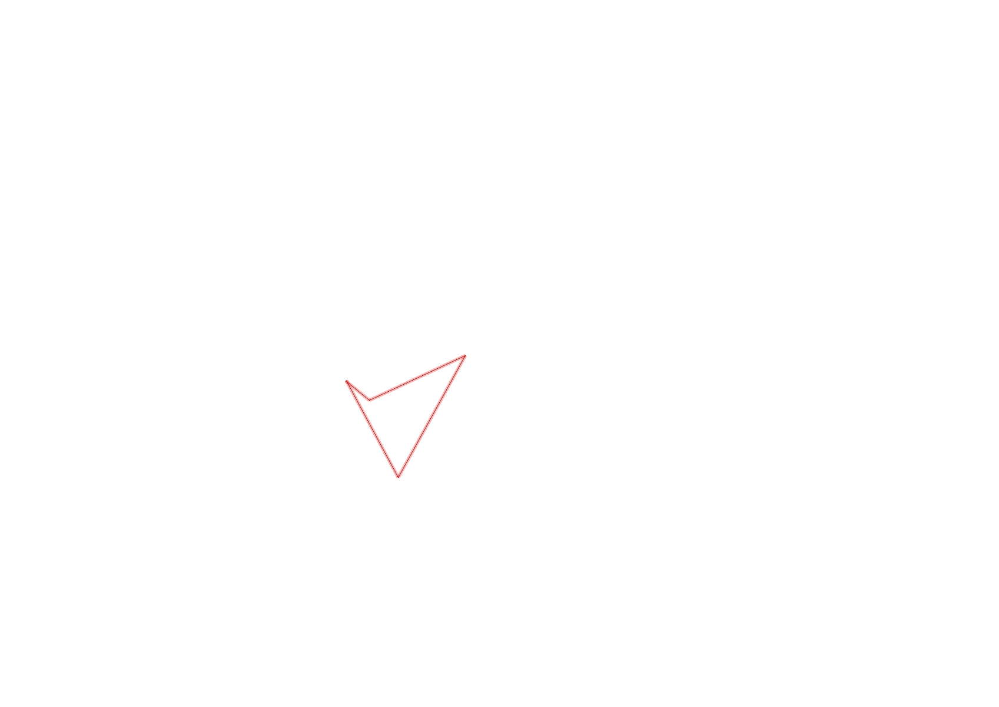
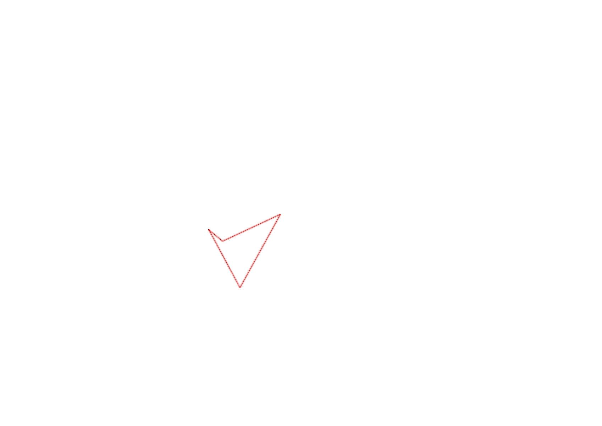
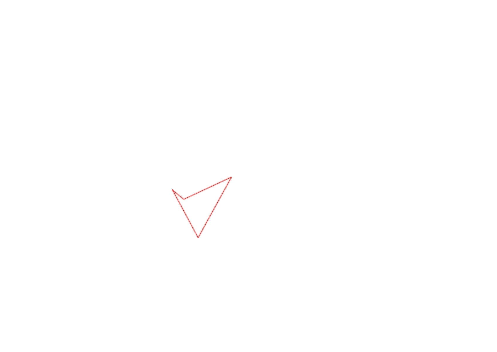

| Control | Points | Time Punched | Distance | Your Time | Pace | Place | Fastest Time | Median Time | % Behind Fastest |
|---|---|---|---|---|---|---|---|---|---|
| 127 | 20 | 0.06 | 0:01:09 | 19:10 | 29 / 30 | 0:00:01 | 0:00:32 | 6800% | |
| 35 | 30 | 0.22 | 0:08:35 | 39:00 | 1 / 1 | 0:08:35 | 0:08:35 | 0% | |
| 42 | 40 | 0.3 | 0:39:34 | 2:11:53 | 1 / 1 | 0:39:34 | 0:39:34 | 0% | |
| Finish | 0 | 0.23 | 0:04:00 | 17:23 | 1 / 1 | 0:04:00 | 0:04:00 | 0% |
